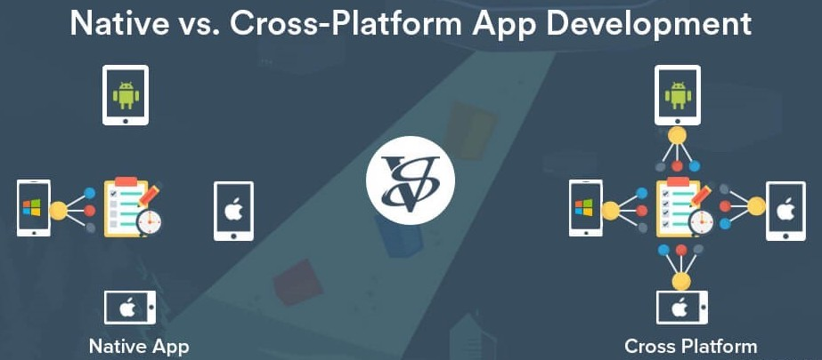
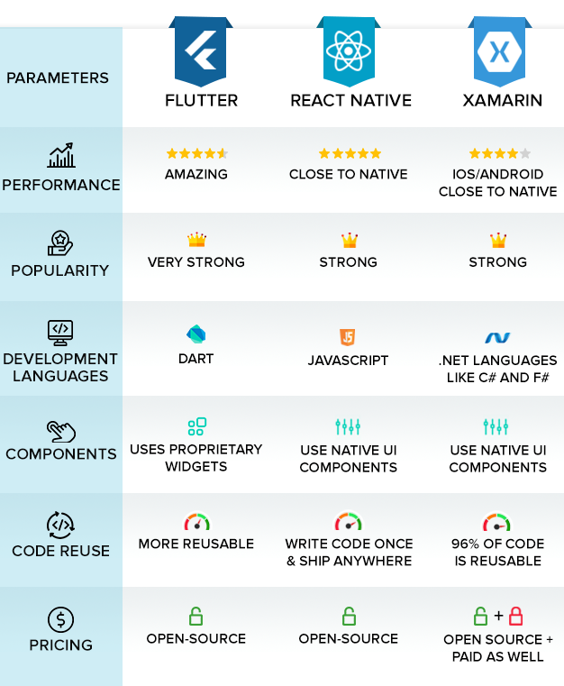

How Mobile Application Development Frameworks can Create the Right App for Your Business?
So, finally, you’ve decided to expand your business and your view to reaching out to a larger audience. Now that you have chosen to go into the mobile application scene, you must be wondering which framework is an ideal choice for your mobile application development. Sounds right, doesn’t it?
Well, it doesn’t make any difference if you need a gaming application or retail application; the most important thing is you need the right framework on which you can develop the said application that can set up your business and take it to a higher level.
Today, we are all surrounded by hundreds of applications and we spend most of our days browsing through them. In any case, have you ever wondered - “How do new companies transform their business digitally?” or “How are mobile applications going to transform the online world?”
If you are looking to create a unique mobile application, the right development libraries, tools, and frameworks, each of them contribute towards delivering the best-ever mobile app experiences. Although there are so many mobile application development frameworks in the market, you must take special care when making the decision to choose the ideal one for your business.
Let’s dive in deeper into mobile application framework, so you can make informed decisions for your business.
What Is Mobile Application Development Framework?
A framework that offers a crucial construction to applications for their successful execution. These are the toolboxes that help application engineers construct the most hearty, high-performance and secure apps. Also, before you plunge into the determination of the one, you need to comprehend different classifications of applications.
Native Applications: Native applications were conceptualized to bring forth customization and efficiency to businesses via applications. This may be because these apps are created using the certain platforms’ core programming language and APIs which make them highly compatible. Invariably, these apps, thanks to the autonomy, are more secure, reliable and less likely to develop a bug problem.
Cross-platform Applications: As the name suggests, cross-platform applications are the ones that are able to work on multiple mobile platforms. It is easy to confuse them with hybrid applications but the glaring difference between the two is shareability. Cross platforms apps allow code sharing while hybrids don’t. They are compatible with both Android and iOS which improves their adaptability as well as efficacy in reaching out to a larger clientele. Some of the best examples of cross platform applications are Facebook Ads Manager.

How Applications Help Your Business
Once you have decided you need a mobile application for your business, you need to understand how it is going to benefit your business, for whom you need it, and how it will be reaching out to the target market.
Here we will be discussing the application development process:
Research who is your target audience and their needs To develop a first-rate mobile application, you need to better understand the market, the crowd you need to target, and what interests your consumers as well as their most recent buying patterns. Having point-by-point statistical surveying can assist you with giving important experiences on how mainstream applications are functioning on the lookout. This further empowers you to determine the issues of clients.
Why Identifying the Right Audience is Critical With regards to choosing the right framework for your mobile application, distinguishing the right crowd is a must. The accomplishment of a mobile application completely relies on the determination of the intended target audience. How the client is using your said services is also one of the most important factors to determine the kind of working framework. You make a point that they have an application worth spending the money on. To all the more likely know your crowd, here are a couple of things you can zero in on:
- Know which crowd needs your application i.e. their geographic location and their socioeconomic background
- Figure out how your application can improve the lives of your intended interest group
- Know how your application will address the issue that your target audience may have
- What do you want to achieve from your application?
- What platform suits your requirements?
- Is your application suitable for iOS or Android, or both?
Features That Will Make Your Application Successful
Every one of the features that you may be adding to your application - Android or iOS - will work in a different way. Say, for example, you have decided to develop a cross-platform application, you need to include features like simple navigation, fast app loading speed, security, flexibility, notifications/alerts, intelligent search filters, etc. to make sure your application is the best in the segment.
Cost of the Mobile Application Development Cost is additionally one of the huge variables when it comes to developing a mobile application. It relies on whom you are recruiting, either an in-house designer or hire an outsourcing company. The type of industry will choose the expense of the application in addition to the application type you need, features, and functionalities you need to add to the application.
Speed Consideration The speed of an application is one of the most important factors to consider when choosing the framework. Applications need to work quickly, similarly to the sites, to keep up with your clients’ needs and requirements. Pretty much every application type should include quick execution for ease of use. Applications made on coding languages like Java and Swift have better speed, easy-to-use, and user friendly.
2021’s Best Mobile Application Development Frameworks
All the above fundamental components help you pick the appropriate framework for the application. We have a rundown of top mobile application frameworks that application engineers regularly use.
1. React Native: If you are looking for a framework that can be used for developing local applications for all gadgets and stages, then React Native is a perfect choice. React Native allows you to develop feature-rich applications for both iOS and Android-based devices. It also allows you to make platform-specific applications that can be used on cross-platform devices.
Features:
- No need for extensive coding
- Third-party plugin support
- Predictive UI
- Suitable for both Android and iOS-based platforms
2. Flutter: Flutter is a UI tool designed by Google to help in building local applications for the web, mobile, and work area. This UI toolbox is included with completely modified gadgets, which support making local applications in a brief period. Additionally, Flutter’s layered design guarantees a quicker delivery of segments.
Features:
- Underlying material plan
- Implicit Cupertino (iOS-flavor) gadgets
- Rich movement APIs
- Supports the two iOS and Android
- Solid gadget support
- Elite application
3. Xamarin: Xamarin is one of the high-quality mobile application frameworks, which is developed by Microsoft. It is .Net-based and suitable for local applications. Xamarin offers an advanced biological framework with backend, API, segments, and so on, which makes it best for cross-platform and open-source applications. With Xamarin engineers, you can develop local apps with the help of a functioning local area for different devices.
Features:
- Adaptable backend foundation
- Indicative instruments
- Application developed on it is faster to load
- SDK director for Android devices
- Storyboard records
- Google emulator director
4. Adobe PhoneGap : Adobe PhoeGap is the brainchild of software companies Adobe and Apache which is used for developing Android applications. This mobile application framework uses coding languages like HTML5, CSS3, and JavaScript and can also be used for cross-platform application development.
Features:
- It is an open-source framework
- Adaptability
- Viable on every one of the stages
- Simplicity of Development
- Solid Backend

Conclusion:
Making a choice of the best framework for application is not any more difficult if you have the appropriate direction set up. In light of your business prerequisites and the requests of the buyers, you can without much of a stretch pick the framework that is adaptable enough for what’s to come.
If you need assistance in finding a mobile application framework that makes your business better and allows you to carve a niche for yourself, if it’s not too much trouble, go ahead and contact a mobile application developer who can help you select the best framework that will meet your needs and requirements. With their immense information and experience, they can help you settle on an optimal decision.